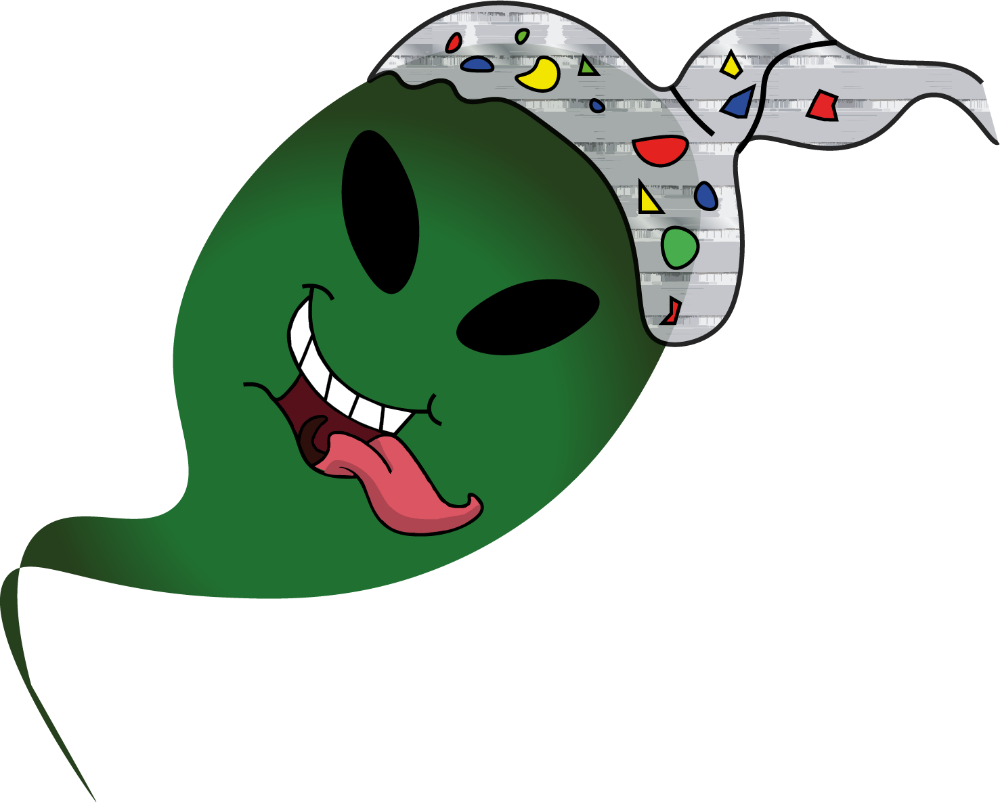

De Podcast
Introductie
Welkom bij Onuitgesproken, de podcast waar we duiken in de wondere wereld van complottheorieën! Van fluisterende reptielen in hoge functies tot maanlandingen die volgens sommigen meer Hollywood zijn dan NASA—wij gaan nergens voor weg. Is het allemaal onzin Of zit er een kern van waarheid in? Onze hosts nemen je mee op een rollercoaster van bizarre claims, serieuze fact-checks en een flinke scheut humor. Want zeg nou zelf: wat is leuker dan met een aluminium hoedje op naar de meest vreemde theorieën luisteren?
Luister nu!
